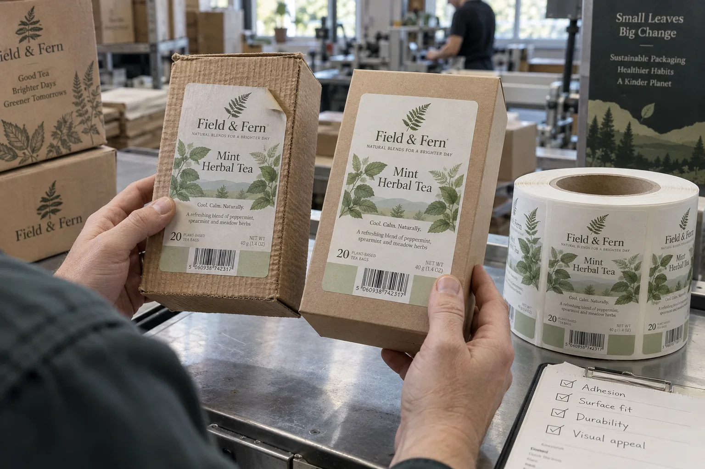
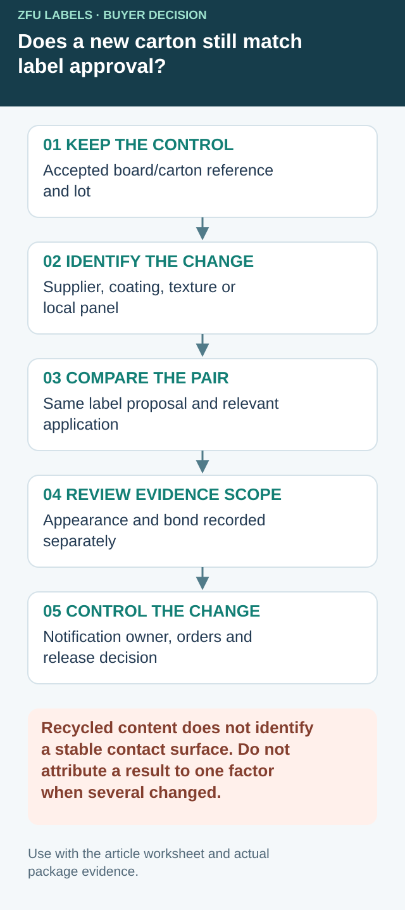

Keep a board-change record before transferring label approval
Recycled content describes one aspect of a carton, not a stable label-contact surface. Ask the carton supplier to identify the supplied board and the changes it will disclose. Keep an accepted carton reference so a later complaint can be compared with something more precise than another photograph of brown cardboard.


Use this comparison register when a carton supplier, board grade, coating or production reference changes. It does not require a new label for every lot; it identifies whether the prior evidence still represents the proposed supply.
| Comparison field | Accepted reference | Proposed carton supply |
|---|---|---|
| Identity | Supplier, carton/board reference and retained lot | New reference and stated relationship |
| Contact face | Coating, print/varnish and observed texture | Declared or observed differences |
| Local geometry | Label panel, folds, glue seams and placement | Which dimensions or contact areas changed |
| Delivery condition | Storage, moisture history and relevant dust condition | Actual incoming condition to represent |
| Label proposal | Construction, footprint and application route | Same proposal or explicitly identified changes |
| Review | Appearance/bond observations and accepted scope | Covered, open or further evidence needed |
Separate a board change from a label change
For a hypothetical tea carton, the board supplier changes an outer coating while the carton dimensions remain the same. Compare the old and proposed carton surfaces using an identified label construction and representative application. A different label may be needed, but that conclusion should follow the relevant evaluation. Do not change the board and adhesive simultaneously and then claim the result proves that recycled fiber caused the original issue.
If several factors must change together to obtain a workable pack, record that the result supports the complete new combination. It may be useful production evidence without isolating one cause. Keep appearance and adhesion findings separate; a more opaque face can improve the printed look while the bonding question remains open.
Make notification actionable
Agree which relevant carton changes should be reported and who reviews their impact on the label. The instruction needs an identifiable carton reference, the affected purchase orders and a point at which the label decision is checked. A general request to keep quality the same does not tell receiving staff which reference to compare.
When an unannounced difference is found, preserve representative incoming cartons and the previous control. Ask the responsible packaging and supplier teams whether production evidence covers the difference. A hold or extra comparison should have a defined scope rather than automatically stopping unrelated carton supplies.
The molded-fiber carton guide covers a specifically contoured lid, the post-application timing guide covers downstream events, and the gift-box guide covers assembled presentation. This register controls changes in the board supply behind an existing approval.
Recycled board is not one surface
A carton can be called recycled and still have very different surface texture, coating and dust from another recycled carton. If a label corner peels off after packing, I would ask for the carton lot before changing the adhesive. A smooth area beside a fold can behave differently from the rough wall next to it.
Avery Dennison lists hotmelt options for rough surfaces and recycled corrugated board. That establishes a possible trial direction, not that every recycled food carton needs the same adhesive. Product-grade suitability and food-packaging documentation must be checked for the actual application.
Two buying situations that look similar on a complaint photo
Imagine a composite small tea brand switching from a white coated carton to a rough brown board. Its old label lifts at one top corner. If the brand can move the graphic a little away from a deep fold, I would try that first with the same artwork size. The buyer may preserve the shelf look without paying for a more aggressive construction.
A larger snack packer may not have that freedom. Its label position is set by a machine and a display-window layout. Here the useful comparison is among approved face and adhesive constructions on actual board lots, at real speed. A hand-pressed sample that holds for an hour is too narrow an approval.
Map the carton before testing materials
Mark folds, glue seams, dusty cut edges and flat panels. Apply test labels to the area where the production label will go. Try cartons as they arrive on the line, not only specially wiped or hand-selected ones. Keep an approved control carton and note differences in board lot and storage. If the carton itself changes supplier, repeat the fit check before assuming the label remains valid.
| Symptom | First check | Possible purchasing response |
|---|---|---|
| Lift beside a fold | Panel geometry and pressure | Move or reshape the label |
| Lift on the whole rough face | Board texture and adhesive trial | Compare suitable constructions |
| Only one carton batch fails | Board lot and surface condition | Review carton supply as well as labels |
| Print looks dull but adhesion holds | Face stock and artwork proof | Separate visual from adhesive decisions |
Test appearance and bond separately
The brown carton may visually warm the brand, but it can also reduce contrast through a translucent or thin label. A more opaque face can solve the artwork problem without solving adhesion, while a high-tack adhesive can hold a label whose colors still look wrong. Approve the printed look and the bond as two separate outcomes on filled cartons.
Ask the label supplier for the intended face, adhesive and liner, and document any applicable packaging-contact requirements. Do not infer compostability or recyclability of the full labeled carton from the words recycled paperboard alone.
Our buying view
Pay for the carton you actually buy
A more aggressive construction can be considered, but first compare the actual carton surface and label position. If the board or coating changes, the accepted evidence may no longer represent the order. Agree a controlled comparison before committing to production.
A useful RFQ for the converter
- Physical cartons from current and expected board lots.
- Exact label panel and folding or gluing sequence.
- Label artwork, finish, dimensions and quantity per SKU.
- Hand or machine application and storage conditions.
- Acceptance time points after packing and transit simulation.
If the look of the label itself is the question, our kraft paper label guide compares finish and exposure. For a broader material screen, use paper versus film food labels.
Frequently asked questions
Why do labels lift on recycled cartons?
Surface roughness, dust, coating and limited actual contact can all contribute. A failed corner alone does not identify the cause.
Is hotmelt adhesive always required?
No. Some hotmelt options are designed for rough recycled board, but suitability depends on the exact board, application and storage conditions.
What should be included in a trial?
Use cartons from the real board supply, the intended label finish and the actual application method; inspect after packing and expected handling.
Related buyer guides
Continue with Egg Carton Labels on Molded Fiber: Test the Carton, Not a Flat Sheet for a focused purchase checklist.
Send the unresolved specification question
Include accepted and proposed carton references/samples, known surface changes, existing label construction, quantities and open comparison fields.
Prepare a label specification inquiry. The contact form opens an email draft; review it and use the listed email or WhatsApp route for attachments. Available construction, sample scope, pricing and timing require confirmation for the actual job.